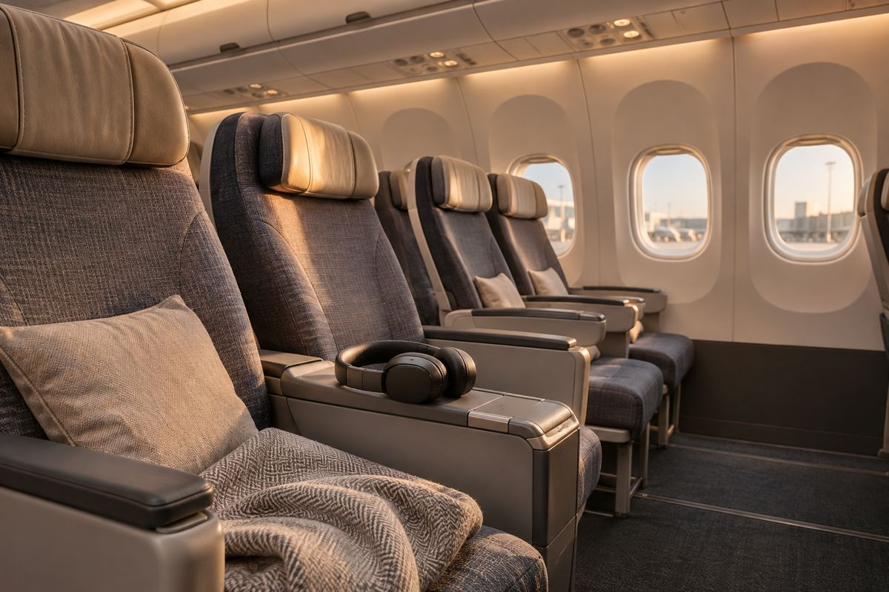

기내 경험 / EXPLAINED
카타르항공, 한스 짐머의 음악을 기내에…소리로 잇는 여행의 단계
11월 6일부터 새 음악을 제공한다고 발표했다. 5곡 앨범은 좌석이나 기종이 아닌 항공사의 소리 정체성을 확장한다.

카타르항공이 작곡가 한스 짐머와 만든 새로운 기내 음악을 11월 6일부터 승객에게 제공한다고 발표했다. 새 곡은 항공사의 소리 정체성을 담은 5곡 앨범 Burgundy Symphony에도 포함된다. 좌석이나 기내식의 변화가 아니라, 승객이 비행 중 접하는 소리를 항공사의 독자적인 경험으로 만드는 시도다. 발표일과 기내 제공 시작일은 같은 날이지만, 세부 재생 시점과 전 기종 적용 순서는 별도로 공개되지 않았다.
화면 밖에서 만드는 브랜드
카타르항공은 도하 하마드국제공항을 중심으로 국제선을 연결하는 항공사다. 한스 짐머는 영화음악 작업으로 알려진 작곡가다. 이번 협업은 유명 음악을 단순히 기내 목록에 추가했다는 설명과 다르다. 항공사를 위해 새로 만든 음악을 일관된 소리 자산으로 사용하는 것이다. 회사는 이를 여행의 감정과 기억을 반영한 정체성으로 설명했다. 다만 브랜드가 주는 인상은 개인의 취향에 따라 다르므로, 음악이 모든 승객에게 같은 감정을 준다고 단정할 수는 없다.
다섯 곡에 나눈 출발과 귀환
앨범은 Dawn, Dusk, The Orchard, Homecoming, An Ode to Qatar로 구성된다. 회사 설명에서 첫 곡은 여행의 시작, 두 번째는 해가 저물 때의 비행, Homecoming은 귀환의 의미를 다룬다. The Orchard는 하마드공항의 실내 정원 ORCHARD에서 영감을 얻었다. 공항 안에서 잠시 쉬는 경험과 기내에서 이동하는 경험을 같은 음악적 언어로 묶으려는 구상으로 읽을 수 있다. 이는 곡의 공개된 배경에 근거한 해석이며, 실제 승객 반응을 조사한 결과는 아니다.
이름이 비슷해도 상품의 종류는 다르다. 이 앨범은 항공사가 제작한 음악 모음이지 특정 좌석 등급을 새로 만든 서비스가 아니다. 전곡이 모든 비행의 이착륙 때 같은 순서로 나온다거나, 승객이 각 곡을 언제든 개별 선택할 수 있다는 세부 운영 조건은 발표에 없다. 예약자는 이 소식만으로 자신이 탈 편의 엔터테인먼트 화면이나 헤드폰 종류가 바뀐다고 기대해서는 안 된다. 객실 장비와 음악 콘텐츠는 서로 다른 층위의 서비스이기 때문이다.
비행하지 않아도 확인할 수 있는 음악
카타르항공은 공개 후 공식 유튜브 채널에서도 작품을 들을 수 있다고 안내했다. 관심 있는 독자는 실제 항공권을 사기 전에 곡의 분위기를 확인할 수 있다. 다만 온라인 공개는 음악을 누구나 재사용하거나 영상 배경음으로 배포할 권리를 준다는 뜻은 아니다. 감상할 수 있는 경로와 저작물 이용 허락은 별개의 문제다. 이 기사에서는 곡을 직접 청음한 듯한 음색 평가나 기내에서 들었다는 경험을 만들지 않았으며, 공개 발표가 설명하는 구성과 제공 경로를 정리했다.
회사는 도하의 11월 6일 공연에서 협업 제작 과정을 담은 영상과 음악을 소개했다고 밝혔다. 공연 기념 공개와 항공편에 적용하는 운영 안내를 구분하면 소식의 범위가 명확해진다. 독자에게 생긴 변화는 기내에서 접할 새 음악과 지상에서도 들을 수 있는 작품집이다. 승객 만족도나 서비스 선호가 실제로 달라졌는지는 앞으로 평가할 문제다. 같은 항공편이라도 소리를 어떻게 접하는지는 좌석과 재생 환경, 개인 취향에 따라 달라질 수 있어 이번 발표를 객실 품질 전체의 개선으로 확대 해석하기는 어렵다.